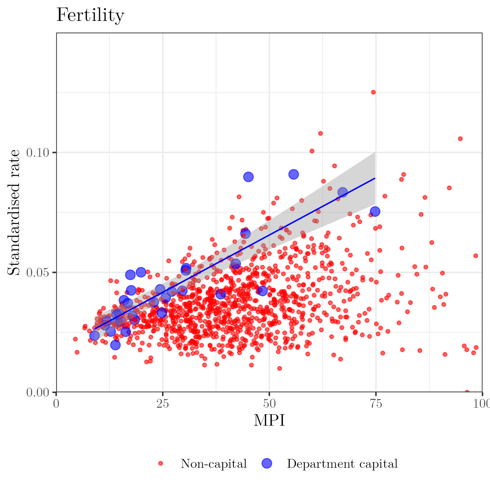

Orphanhood estimates in Colombia
Overview
The 32 departments and one capital district (Bogotá) can be grouped together into the 6 regions of Colombia (right panel), namely, (1) Caribe, (2) Eje cafetero y Antioquia, (3) Pacífica, (4) Central, (5) Llanos, and (6) Amazonía.
Colombia can still be divided into 1121 municipalities (this classification varies along the years, and we are using the definition from 2021).
Fertility and Mortality rates
Mortality and Fertility counts are expected to be underreported in the next most deprived municipalities. In particular, we will use the Multidimensional Poverty Index (MPI) as a way to measure the deprivation levels across the country.
For instance, let us start by analyzing the standardized mortality and fertility rates in all locations (in 2018).
Complementary, we can take a look at such rates as a function of the MPI. From these plots, we can see that the most deprived municipalities have the smallest standardized fertility and mortality rates–which is the opposite of what we would expect. Thus, we may want to account for underreporting.
|  |
Bias Correction
Here, we provide details on the approach we took to correct the bias for both mortality and fertility rates.
Mortality
Let \(D_{y,a, g}^{\ell}\) denote the number of deaths in year \(y\), for individuals of gender \(g\) who belong to the age group \(a\), at location (e.g., municipality) \(\ell\). In the same setting, let \(P_{y,a, g}^{\ell}\) denote the population size.
Aiming at modeling the death curves in each municipality following a similar pattern (by a shifting factor) to the national deaths, let us define \[ \begin{align} D_{y,a, g}^{\text{Nat}} &\sim \text{Binomial}\left(P_{y,a, g}^{\text{Nat}}, \mu_{y,a, g}^{D, \text{Nat}}\right) \\ \text{logit}\left(\mu_{y,a, g}^{D, \text{Nat}}\right) &= \beta_{0, y} + \beta_{1, y} \cdot 1\{g = \text{Male}\} + d_y^{\text{Female}}(a) \cdot 1\{g = \text{Female}\} + d_y^{\text{Male}}(a) \cdot 1\{g = \text{Male}\}, \nonumber \end{align} \] where \(d_y^{g}(a)\) is a random effect that varies over the age groups \(a\), and is defined for each gender \(g\) and year \(y\). In particular, we will set it to a \(\text{GP}(0, \Sigma_{\theta_g})\) with exponentiated quadratic kernel, such that \(\theta_d = (\ell_g, \sigma_g)^{\top}\).
Now, for each location \(\ell\) at municipality level, let \[ \log\left(\mu_{y,a, g}^{D, \ell}\right) = \log\left(\gamma_{y}^{\ell}\right) + \log\left(\mu_{y,a, g}^{D, \text{Nat}}\right), \tag{1}\] where \(\gamma_{y}^{\ell}\) is a shifting factor (common for all age groups \(a\) and genders \(g\)).
Thus, in order to estimate \(\gamma_{g}^{\ell}\), define standardized death rate \(\nu_{y}^{\ell}\) at municipality \(\ell\) and in year \(y\) as follows \[ \nu_{y}^{\ell} = \sum_{a, g} \frac{P^{\text{Nat}}_{a, g}}{P^{\text{Nat}}} \cdot \hat{\mu}_{y,a, g}^{D, \ell}, \tag{2}\] where \(\hat{\mu}_{y,a, g}^{D, \ell}\) is the empirical death rate, and the reference population is determined based on the census of, e.g., 2018. In particular, we will compute \(\nu_{y}^{\ell}\) for all department capitals, and smooth them out as in \[ \nu_{y}^{\ell} = \alpha_{0, y} + x_{\ell} \cdot \alpha_{1, y} + \varepsilon_{y}^{\ell}, \text{ s.t. } \varepsilon_{y}^{\ell} \overset{\text{i.i.d.}}{\sim} \text{N}(0, \sigma_{\varepsilon}), \tag{3}\] where \(x_{\ell}\) is the MPI at location \(\ell\). Then, the standardized death rate in all locations \(\ell\) can be computed based on the estimates from Equation 3.
Lastly, let \[ \gamma_y^{\ell} = \min\left(\frac{\nu_y^{\ell}}{\nu_y^{\text{Nat}}}, \frac{\nu_{y}^{\text{Emp}}}{\nu_y^{\text{Nat}}}\right), \] where \(\nu_{y}^{\text{Emp}}\) is the empirical (i.e., biased or uncorrected) standardized death rate and \(\nu_y^{\text{Nat}} = \left(P^{\text{Nat}}\right)^{-1} \cdot \sum_{a, g} P^{\text{Nat}}_{a, g} \cdot \mu_{y,a, g}^{D, \text{Nat}}\).
This allows us to estimate \(\mu_{y,a, g}^{\ell}\), such that the expected number of deaths in each municipality \(\ell\) is given by \(P_{y, a, g}^{\ell} \times \mu_{y, a, g}^{D, \ell}\).
Fertility
Similarly to before, we can model the births as follows. Let \(B^{\ell}_{y, a, g}\) denote the number of births in year \(y\), for individuals of gender \(g\) who belong to age group \(a\), at location \(\ell\). Then, \[\begin{align} \label{eq:national-birth} B_{y,a, g}^{\text{Nat}} &\sim \text{Negative Binomial}\left(\mu_{y,a, g}^{B, \text{Nat}}, \phi_g\right) \\ \text{log}\left(\mu_{y,a, g}^{B, \text{Nat}}\right) &= \beta_{0, y}^g + d_y^g(a) \nonumber \end{align}\] where \(\mathbb{E}(B_{y,a, g}^{\text{Nat}}) = \mu_{y,a, g}^{\text{Nat}}\) and \(\text{Var}(B_{y,a, g}^{\text{Nat}}) = \mu_{y,a, g}^{B, \text{Nat}} + \left[\left(\mu_{y,a, g}^{B, \text{Nat}}\right)^2 /\phi_g\right]\), such that \(\phi_g \geq 0\) is an overdispersion parameter. Also, \(d_y^{g}(a)\) is a random effect that varies over the age groups \(a\), and is defined for each gender \(g\) and year \(y\). In particular, we will set it to a \(\text{GP}(0, \Sigma_{\theta_g})\) with exponentiated quadratic kernel, such that \(\theta_g = (\ell_g, \sigma_g)^{\top}\).
Once again, the fertility rates \(\mu_{y,a, g}^{B, \ell}\) in all locations will be computed as in Equation 1, such that shifting factor \(\gamma_{y}^{\ell}\) is determined based on the standardized fertility rate, defined similarly to Equation 2 and Equation 3. Lastly, the expected number of births in each municipality \(\ell\) will be given by \(P_{y, a, g}^{\ell} \times \mu_{y, a, g}^{B, \ell}\).
Corrected rates
To be completed.
Orphanhood Estimates
Uncorrected results
- Orphanhood incidence in Colombia in 2021: 69,956.
- Orphanhood incidence (per children) in Colombia in 2021: 0.5%.
- Orphanhood prevalence in Colombia in 2021: 423,670.
- Orphanhood prevalence (per children) in Colombia in 2021: 3.00%.
Corrected results
- Orphanhood incidence in Colombia in 2021: 100,134.
- Orphanhood incidence (per children) in Colombia in 2021: 0.71%.
- Orphanhood prevalence in Colombia in 2021: 623,218.
- Orphanhood prevalence (per children) in Colombia in 2021: 4.42%.